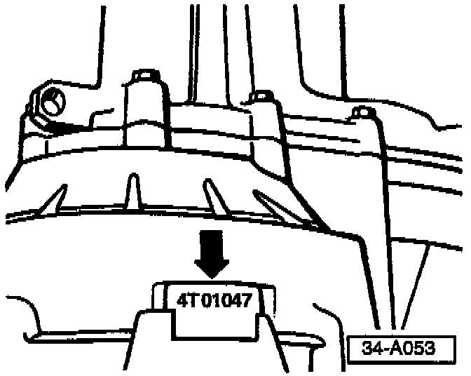
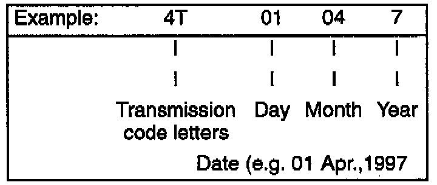

M/T - Strainer Added to Prevent Ring and Pinion Damage
Group: 34Number: 97-05
Date: Oct. 31, 1997
Subject:
Ring and Pinion, Damage Due to Chipped Reverse Gear
Model(s):
All with 020 Transmission -->01047 (trans. build date)
Condition
Ring and pinion damage due to chipped reverse gear.
Production
As of transmission build date 01047, a strainer has been installed which prevents chipped reverse gear metal from contacting ring and pinion.


Code letters and date of manufacture (arrow).
Service
When repairing a transmission (prior to build date 01047) with a damaged reverse gear:

- Install strainer Part No: 02K 301 555 during repair.
CAUTION!
Part numbers are for reference only. Always check with your Parts Dept. for the latest parts in formation.
Installed position
Strainer is held in place by relay lever bracket -A- and bearing cover -B-.
When procedure applies to vehicles within The New Vehicle Limited Warranty and adheres to Warranty Policy guidelines, claim part only, labor is included in transmission repair time.